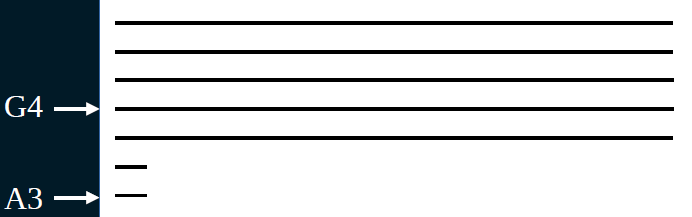

<section class="container-content">
    <div class="d-flex flex-column justify-content-around etapa1-texto">
        <div>
            <h5>Podemos, também, considerar oitavas acima ou abaixo das notas que estão em uma pauta:</h5>
            <p>Por exemplo, a nota A3 ficaria nesta posição:</p>
        </div>
        <div>
            
        </div>
    </div>
</section>

<div class="btn-etapas-container  ">
    <div class="btn-container">
        <button id="btn-voltar-context" onclick="btnVoltarEtapas(conteudo_etapa10.etapa10Conteudo7, 10)" class="btn selecao-etapas-btn" role="button">Voltar</button>
    </div>
    <div class="btn-container">
        <button id="btn-avancar-context" onclick="btnAvancar(conteudo_etapa10.etapa10Conteudo9, 10)" class="btn selecao-etapas-btn" role="button">Avançar</button>
    </div>
</div>